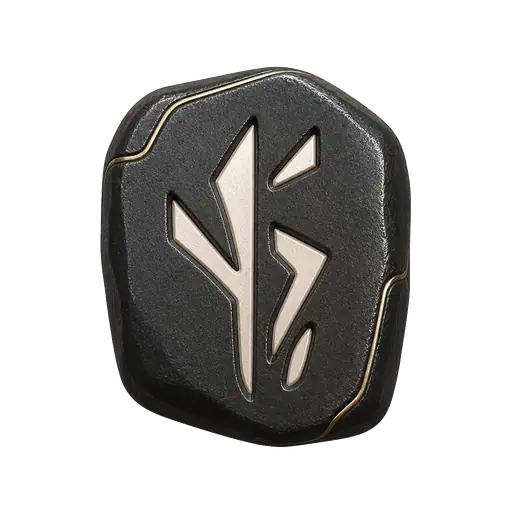

01 · Волна от текущей сессии
Сначала текущий узел, затем ближайшие шаги и маршрут в обе стороны.
Каждый вариант воспроизводится отдельно. Геометрия взята из приложения: узлы 101 px, шаг 128 px, волна Pulse и кубические соединители между реальными позициями.
Сначала текущий узел, затем ближайшие шаги и маршрут в обе стороны.
Маршрут приближается, узлы занимают свои позиции от текущего центра.
Спокойный короткий вход: текущая сессия, соседи, затем остальная карта.

120